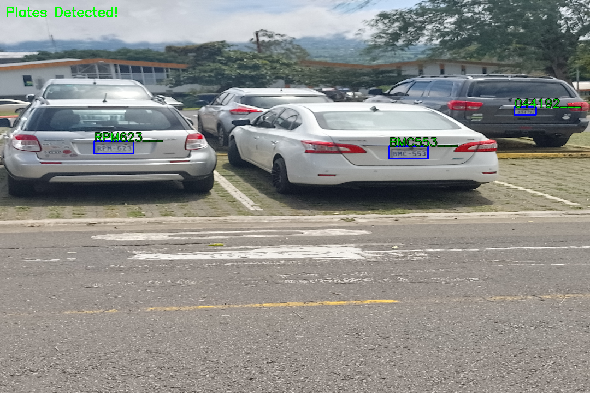
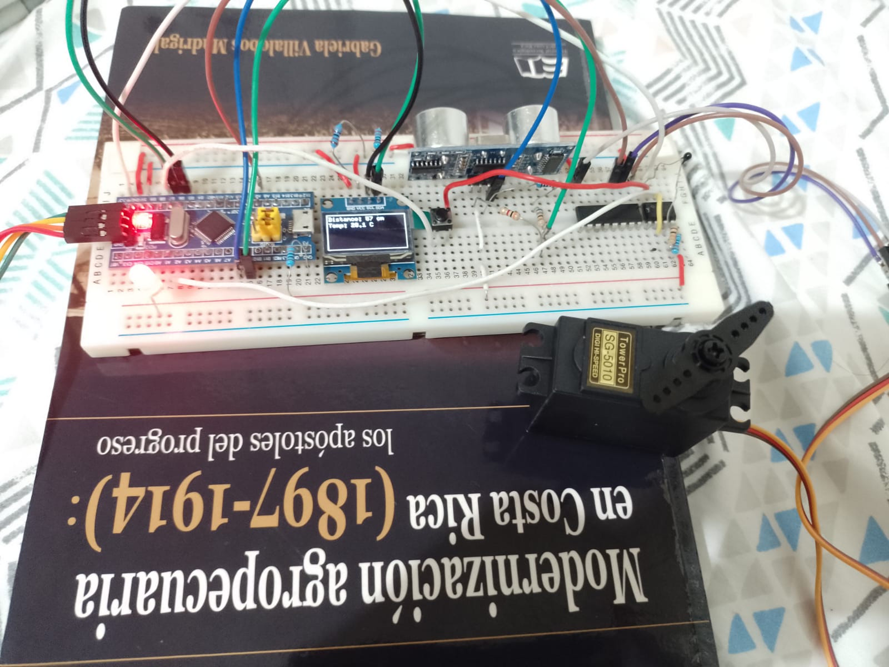
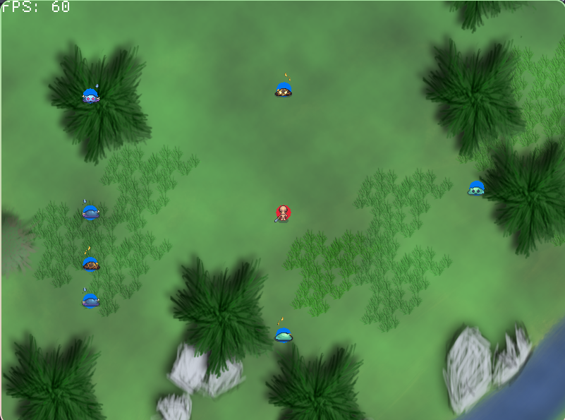
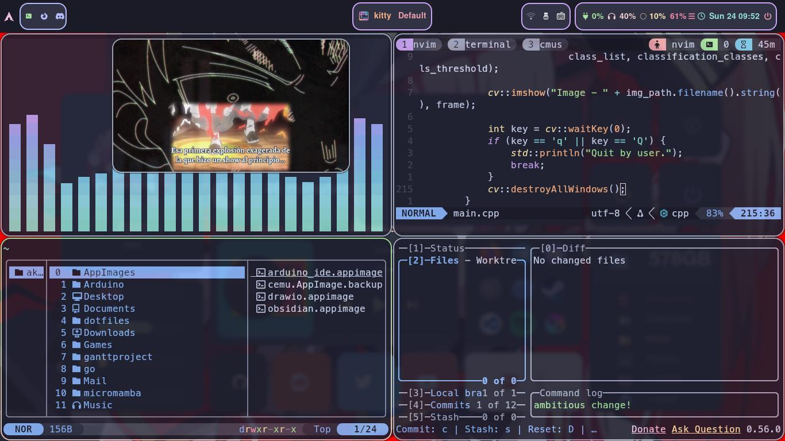

Intituto Tecnológico de Costa Rica required an ALPR due to difficulty of finding parking slots, but it had to be cheap to use propetary hardware. The solution was to train and deploy a custom ALPR. It was designed in two stages to train with few data and to compensate lack of data a method of synthetic data generation was proposed.
View Code
This was a very simple example of how to program embedded software in rust embassy. A few thought may be written later about some intersting concerns.
View Code
My very first game and my very first use of Rust. This is a game when you run from a group of chaser slimes. A lot of features were never implement like damage from attacks or criteria of losing/winning. My objetice was mainly to learn basic core of rust.
View Code
I am a linux enthusiast, so I would like to share my dotfiles. I haven't updated them in a while so may be a lot of problems.
View Code